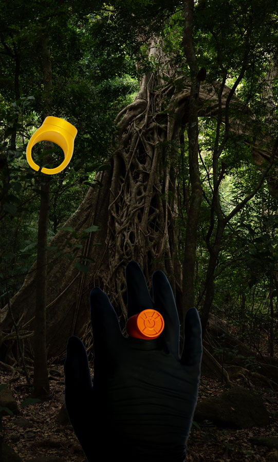

You swing for the ring.
Your mind races with everything you have ever desired but were unable to obtain.
The rings voice disappears and it is only your voice that is heard. You whisper to yourself while also trying to not laugh "You can't have that! Its mine! This sector is MINE!"
"What's mine is mine and mine and mine. And mine and mine and mine! Not yours!"
You are transformed in a bright flash of orange light. You have officially become an Orange Corps member.
The End?
Change of heart?
